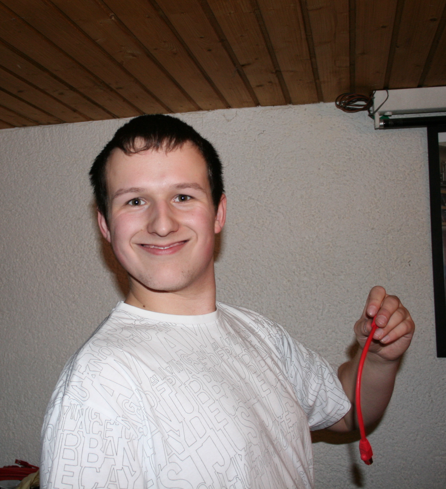

class: center, middle, inverse # Foreman + OpenBolt ## a ♥ story in three acts ??? * why 3 acts you might ask? A great question! let me answer it in 25 minutes! --- ## $ whoami <p></p> * Tim 'bastelfreak' Meusel * Puppet Contributor since 2012 * Merging stuff on [Vox Pupuli](https://voxpupuli.org/) since 2015 * Vox Pupuli PMC member * Principal IT Automation Consultant at [betadots](https://betadots.de/) [](https://www.betadots.de) ??? * who has seen this picture before because I reviewed/merged your pull request? --- background-image: url(awesome.png) <a style="position: fixed; bottom: 12px; left: 20px; font-size: 36px;" href="https://www.destroyallsoftware.com/talks/wat">www.destroyallsoftware.com/talks/wat</a> ??? * 14 years ago there was a talk about stuff that's awesome * It was a talk about Ruby! * Do you know what's also written in Ruby? --- background-image: url(awesome-foreman.png) ??? * Foreman is written in Ruby! * do you know what's also written in Ruby? --- background-image: url(awesome-foreman-openvox.png) ??? * The Vox Pupuli and OpenVox ecosystem! * who never heard about OpenVox? * Perforce stopped doing opensource. OpenVoxProject was born. We continue 4 tools. openvox-agent. openvoxdb. openvoxserver. openbolt --- .left-column[ ### OpenBolt ] .right-column[ * Runs tasks via ssh or WinRM on remote systems * CLI only * A task is a executable binary/script + json file * Also supports Podman/Docker/Jails/lxd targets ] [](https://www.betadots.de) ??? * Who heard about openbolt before? * Who knows what an openbolt task is? --- count: false .left-column[ ### OpenBolt ] .right-column[ ```json { "puppet_task_version": 1, "supports_noop": false, "description": "Switch feat branch to production", "parameters": { "control_repo_branch": { "description": "Control-repo branch", "type": "String[1]" } } } ``` ```sh #!/bin/bash set -euo pipefail pushd /tmp/control-repo || exit git branch --move production old_prod git branch --move "$PT_control_repo_branch" production ``` ] [](https://www.betadots.de) ??? --- .left-column[ ### OpenBolt ] .right-column[ * Runs tasks via ssh or WinRM on remote systems * CLI only * A task is a executable binary/script + json file * Also supports Podman/Docker/Jails/lxd targets * Input and output of each task is JSON * makes parsing, scripting and concatenating easy ] [](https://www.betadots.de) ??? * this makes it easy to reuse existing scripts or the small go or rust binaries in your home dir. throw a short json file next to it, done. --- .left-column[ ### OpenBolt ### How it started ] .right-column[ .img[] [github.com/puppetlabs/puppet-enterprise_issues/issues/28](https://github.com/puppetlabs/puppet-enterprise_issues/issues/28) ] [](https://www.betadots.de) ??? * Perforce has a commercial web-UI, similar feature set to Foreman * It has a feature for remote execution of Tasks & Plans * There are plenty of Tasks & Plans already available * It scales and it has a broker * I know it is proprietary and people would have to pay for it --- .left-column[ ### OpenBolt ### How it started ] .right-column[ .img87[] [community.theforeman.org/t/rfc-integrating-bolt-into-remote-execution](https://community.theforeman.org/t/rfc-integrating-bolt-into-remote-execution/39901) ] [](https://www.betadots.de) ??? * perforce wasn't interested, so we started a discussion for an open source implementation --- .left-column[ ### OpenBolt ### How it started ### Act 1 ] .right-column[ .img[] * Recording: [youtu.be/NRtstDVtpyk?t=21810](https://youtu.be/NRtstDVtpyk?t=21810) ] [](https://www.betadots.de) ??? * Foreman Birthday Party 2025 * Let's assume you bought the commercial Puppet enterprise, can you migrate to Foreman? * I provided patches to a few foreman modules and you can provision Foreman in an existing PE environment * migration is easy and works. Except one missing feature: remote execution --- .left-column[ ### OpenBolt ### How it started ### Act 1 ### Act 2 ] .right-column[ .img[] * Slideset: [bastelfreak.de/cfgmgmtcamp2026/openbolt.html](https://bastelfreak.de/cfgmgmtcamp2026/openbolt.html#1) ] [](https://www.betadots.de) --- .left-column[ ### OpenBolt ### How it started ### Act 1 ### Act 2 ] .right-column[  ] [](https://www.betadots.de) --- .left-column[ ### OpenBolt ### How it started ### Act 1 ### Act 2 ] .right-column[ * [Choria Orchestration System](https://choria.io/docs/concepts/architecture/) .img70[] ] [](https://www.betadots.de) ??? * successor of mcollective, or mcollective 2.0. same developers. scales to tens of thousands of systems --- .left-column[ ### OpenBolt ### How it started ### Act 1 ### Act 2 ] .right-column[ * [Choria Orchestration System](https://choria.io/docs/concepts/architecture/) .img70[] ] [](https://www.betadots.de) ??? * our plan was to integrate choria into openbolt --- class: center, middle, inverse # Act 3 <br/> --- .left-column[ ### OpenBolt ### How it started ### Act 1 ### Act 2 ### Act 3 ] .right-column[ * [github.com/overlookinfra/foreman_openbolt](https://github.com/overlookinfra/foreman_openbolt) - OpenBolt Plugin for Foreman ] [](https://www.betadots.de) ??? --- count: false .left-column[ ### OpenBolt ### How it started ### Act 1 ### Act 2 ### Act 3 ] .right-column[ * [github.com/overlookinfra/foreman_openbolt](https://github.com/overlookinfra/foreman_openbolt) - OpenBolt Plugin for Foreman * [github.com/overlookinfra/smart_proxy_openbolt](https://github.com/overlookinfra/smart_proxy_openbolt) - OpenBolt Smartproxy Plugin ] [](https://www.betadots.de) ??? --- count: false .left-column[ ### OpenBolt ### How it started ### Act 1 ### Act 2 ### Act 3 ] .right-column[ * [github.com/overlookinfra/foreman_openbolt](https://github.com/overlookinfra/foreman_openbolt) - OpenBolt Plugin for Foreman * [github.com/overlookinfra/smart_proxy_openbolt](https://github.com/overlookinfra/smart_proxy_openbolt) - OpenBolt Smartproxy Plugin * [github.com/theforeman/foreman-installer/pull/1049](https://github.com/theforeman/foreman-installer/pull/1049) - foreman-installer Integration ] [](https://www.betadots.de) ??? --- count: false .left-column[ ### OpenBolt ### How it started ### Act 1 ### Act 2 ### Act 3 ] .right-column[ * [github.com/overlookinfra/foreman_openbolt](https://github.com/overlookinfra/foreman_openbolt) - OpenBolt Plugin for Foreman * [github.com/overlookinfra/smart_proxy_openbolt](https://github.com/overlookinfra/smart_proxy_openbolt) - OpenBolt Smartproxy Plugin * [github.com/theforeman/foreman-installer/pull/1049](https://github.com/theforeman/foreman-installer/pull/1049) - foreman-installer Integration * [github.com/OpenVoxProject/openbolt/pull/206](https://github.com/OpenVoxProject/openbolt/pull/206) - Integrate Choria Transport into OpenBolt ] [](https://www.betadots.de) ??? --- count: false .left-column[ ### OpenBolt ### How it started ### Act 1 ### Act 2 ### Act 3 ] .right-column[ * [github.com/overlookinfra/foreman_openbolt](https://github.com/overlookinfra/foreman_openbolt) - OpenBolt Plugin for Foreman * [github.com/overlookinfra/smart_proxy_openbolt](https://github.com/overlookinfra/smart_proxy_openbolt) - OpenBolt Smartproxy Plugin * [github.com/theforeman/foreman-installer/pull/1049](https://github.com/theforeman/foreman-installer/pull/1049) - foreman-installer Integration * [github.com/OpenVoxProject/openbolt/pull/206](https://github.com/OpenVoxProject/openbolt/pull/206) - Integrate Choria Transport into OpenBolt * All changes are merged & released & packaged for Foreman 3.17.1+ ] [](https://www.betadots.de) ??? --- .left-column[ ### OpenBolt ### How it started ### Act 1 ### Act 2 ### Act 3 ] .right-column[  ] [](https://www.betadots.de) ??? --- .left-column[ ### OpenBolt ### How it started ### Act 1 ### Act 2 ### Act 3 ] .right-column[  ] [](https://www.betadots.de) ??? * The "Launch Task" option allows you to select any smartproxy with the openbolt feature (which is available when the OpenBolt Smartproxy plugin is installed). Afterwards you can select N targets to run the task and select an available task from the selected Smartproxy. On the right side you can configure OpenBolt connection settings. --- .left-column[ ### OpenBolt ### How it started ### Act 1 ### Act 2 ### Act 3 ] .right-column[  ] [](https://www.betadots.de) ??? * After selecting a task, the task metadata is fetched and shown. Additional input elements will appear, if the task support it. --- .left-column[ ### OpenBolt ### How it started ### Act 1 ### Act 2 ### Act 3 ] .right-column[  ] [](https://www.betadots.de) ??? * The metadata can contains a description and datatypes for tasks. Those information can be shown as well. --- .left-column[ ### OpenBolt ### How it started ### Act 1 ### Act 2 ### Act 3 ] .right-column[ .img80[] ] [](https://www.betadots.de) ??? * While the task is running, the UI polls the status from the smart proxy. --- .left-column[ ### OpenBolt ### How it started ### Act 1 ### Act 2 ### Act 3 ] .right-column[  ] [](https://www.betadots.de) ??? * After the task finished, it will display a success for failure page. --- .left-column[ ### OpenBolt ### How it started ### Act 1 ### Act 2 ### Act 3 ] .right-column[  ] [](https://www.betadots.de) ??? * We also display the used OpenBolt command line, in case you want to manually run it or debug it. --- .left-column[ ### OpenBolt ### How it started ### Act 1 ### Act 2 ### Act 3 ] .right-column[  ] [](https://www.betadots.de) ??? * OpenBolt returns JSON for executed tasks. That's visible in the UI. For failed tasks but also for passed tasks. --- .left-column[ ### OpenBolt ### How it started ### Act 1 ### Act 2 ### Act 3 ] .right-column[ .img57[] ] [](https://www.betadots.de) ??? --- .left-column[ ### OpenBolt ### How it started ### Act 1 ### Act 2 ### Act 3 ## Conclusion ] .right-column[ * OpenBolt is a great addition to the Foreman ecosystem * Makes it easy to reuse existing Tasks (and soon Plans) ] [](https://www.betadots.de) ??? --- count: false .left-column[ ### OpenBolt ### How it started ### Act 1 ### Act 2 ### Act 3 ### Conclusion ] .right-column[ * OpenBolt is a great addition to the Foreman ecosystem * Makes it easy to reuse existing Tasks (and soon Plans) * Choria provides almost infinite scaling and opposite firewalling ] [](https://www.betadots.de) ??? --- count: false .left-column[ ### OpenBolt ### How it started ### Act 1 ### Act 2 ### Act 3 ### Conclusion ] .right-column[ * OpenBolt is a great addition to the Foreman ecosystem * Makes it easy to reuse existing Tasks (and soon Plans) * Choria provides almost infinite scaling and opposite firewalling * Please join our [IRC/Slack](https://voxpupuli.org/connect/) to provide feedback * For feedback: `bastelfreak` on IRC/ Slack or [tim@bastelfreak.de](mailto:tim@bastelfreak.de) * This talk and previous ones: [github.com/bastelfreak/talks](https://github.com/bastelfreak/talks) ### Thanks for your attention! ] [](https://www.betadots.de) ??? --- count: false .left-column[ ### OpenBolt ### How it started ### Act 1 ### Act 2 ### Act 3 ### Conclusion ### Act 4 ] .right-column[ ```puppet # @summary one plan to rule them all! # @param version which Foreman version do we want? # @param node systemd where we install foreman plan foreman::install ( String[1] $version = '3.19.1', TargetSpec $node, ) { $os = run_task('facts', $node).first['os']['family'] if $os == 'RedHat' { run_task('yum::update', $node) } out::message("setting up foreman on ${node}") run_task('foreman::add_repo', $node) $package = {'action' => 'install', 'name' => 'foreman-service'} run_task('package', $node, $params) $service = {'action' => 'start', 'name' => 'foreman'} $result = run_task('service', $node, $service} if $result.ok { out::message("worked on ${result.ok_set}") } } ``` ] [](https://www.betadots.de) ???